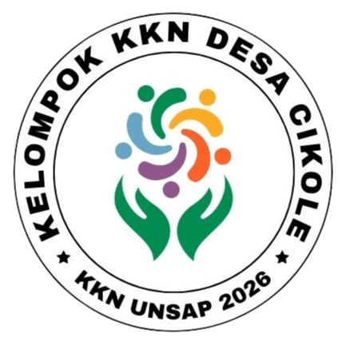
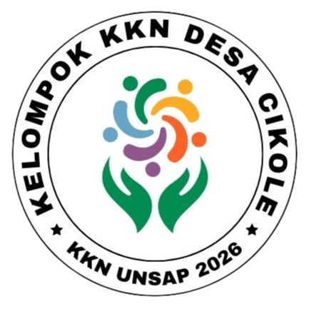
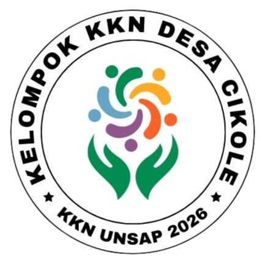

Peta Digital
Desa Cikole • Kecamatan Cimalaka
Menyiapkan tampilan…
Peta Digital Desa Cikole
Kecamatan Cimalaka • Kabupaten Sumedang
💡 Tips
📍 Buka di Google Maps
Map View
Klik tombol 🔒 untuk mengaktifkan interaksi peta
🔒
⛶
Memuat peta…
Ctrl
+
Scroll
untuk zoom cepat
Tips penggunaan
✕
Gunakan kolom
search
untuk menemukan lokasi cepat.
Gunakan filter kategori untuk mempersempit daftar.
Klik
Google Maps
untuk membuka lokasi dan navigasi.
Tombol ⤢ di peta untuk
ON/OFF
interaksi peta (agar scroll tidak “nyangkut”).
Siap
 
